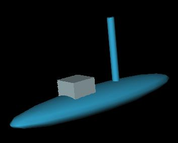
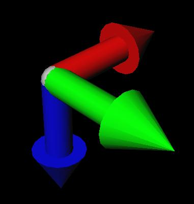

| Marine Visualization Toolbox | |
Tutorial#2
This tutorial is an instruction on how to use custom VRML models with the MVT, it is not an introduction to 3D modelling.
The VRML editor used in this tutorial is the editor included in the Virtual Reality Toolbox 3.0: V-Realm Builder, Version 2.0 by Integrated Data Systems, Inc. The program is located in the toolbox subfolder vr, under vrealm.
Files included for this tutorial are located in the MVT help folder, under tutorials, typically: [your_matlabroot]\help\toolbox\mvt\tutorials. Always search this folder when asked to open a file during this tutorial.
Step 1 - Alternative vessel models
All vessels used with the MVT must have two levels of VRML files. The first level may be several VRML models, which represent the alternative ways of displaying a vessel (see the Display vessel as... field in the director GUI). Level two integrates all these files in one single file, using the VRML command Inline.
This tutorial includes two different VRML mdoels, a vessel and the axis it's body-fixed frame. These have the file extension inline, this is to avoid confusion with the VRML files with extension wrl when selecting vessel models in the typedef GUI.
Step 1:
Open the file: my_inlined_vessel.inline in your VRML editor. By rotating the object a little bit, it should something like the figure below.

The VRML model in my_inlined_vessel.inline.
This model will be one of the two possible models to display the custom vessel in an animation.
The other model is the vessel's body-fixed axis, open the file my_inlined_axis.inline to view this model. It should look something like the figure below, the red, green and blue arrows are the x, y and z-directions respectively.

The vessel's body-fixed axis.
You now have two models that may represent the vessel in an animation, but you may have any number of alternative models for one vessel.
Step 2 - The vessel VRML file
All vessel VRML files have file extensions wrl (e.g. auv.wrl, supply.wrl), and they all reference files with extension inline (e.g. auv.inline, axis.inline). You should follow this naming convention, to avoid confusion between inlined files and vessel files, when creating your own custom vessels.
Step 2:
Open the file my_vessel.wrl in the VRML editor. This file might not appear to contain anything at all, but you should be able to see a wireframe box centered onthe screen, like in the figure below.

A bounding box illustrating the position of the inlined VRML file.
Since the only models in this file are referenced by inline, the editor only displays a bounding box to give you a general idea of the model's position. If you're using V-Realm Builder, you should see a hierarchy tree to the left, like the one below except for the red underlining.

The hierarchy of the VRML file my_vessel.wrl.
The two model files from previous step are referenced as inlines, these are both children of the vessel_switch (underlined red). If you want to add other alternative models, add them under the vessel_switch as inlined files.
The translation and rotation of vessel_trans are manipulated directly by the MVT, these are the fields that move your vessel! Entering values in these fields have no effect, since MVT overwrites them when creating animations.
The given names with red underlines must be spelled in this exact manner to be recognized by the MVT. All others may be named anything, but note that the names of the inline fields (vessel and axis), will appear in the popupmenu Display vessel as... in the director GUI.
When animating the translation field of view will be set equal to the translation field of vessel_trans. Thus the viewpoints that are children of view will follow the vessel as it moves, you may define any number of viewpoints.
Step 3 - Copy the VRML files to the MVT folder
In order to use the above VRML files with the MVT you have to copy the files to the MVT subfolder vessel, this is where all vessel models must be located.
Step 3:
Copy the three files from step 1 and 2 to your MVT subfolder vessel, typically: [your_matlabroot]\toolbox\mvt\vessel.
The VRML files are now recognized by the typedef GUI and displayed as any other vessels the next time you run the toolbox.
Step 4 - Custom scene models
To use custom scene models with the MVT, simply create your own scene model, and save it to the MVT subfolder world, typically: [your_matlabroot]\toolbox\mvt\world. You may include any number of viewpoints in a scene model.
|
Tutorial#1 | Examples on use | |